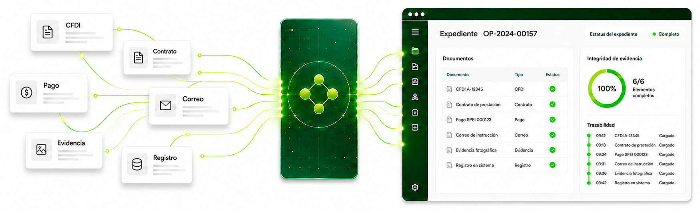
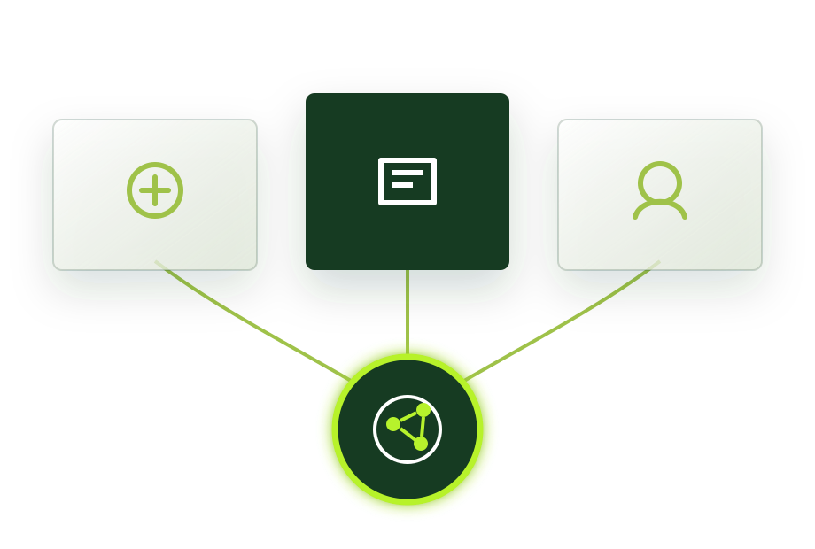
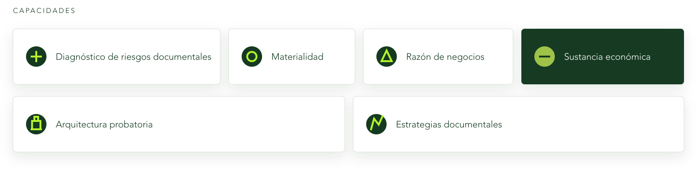

01 | Mayor fiscalización
Las reformas fiscales y el nuevo marco normativo en México fortalecen las facultades de comprobación de la autoridad y elevan el estándar para acreditar la realidad de las operaciones.
Expedientes electrónicos inteligentes, automatización e inteligencia artificial privada para fortalecer la materialidad, facilitar el cumplimiento y reducir riesgos fiscales.
Solicitar demoLas reformas fiscales y el nuevo marco normativo en México fortalecen las facultades de comprobación de la autoridad y elevan el estándar para acreditar la realidad de las operaciones.
Un CFDI, un contrato o un comprobante de pago no acreditan por sí solos una operación. Las organizaciones deben contar con evidencia objetiva y consistente de su existencia, ejecución, materialidad, sustancia económica, razón de negocios y trazabilidad.
La falta de evidencia suficiente puede generar contingencias fiscales, restricciones del Certificado de Sello Digital, negativas de devolución de impuestos, créditos fiscales e incluso responsabilidades de carácter penal.
Elementia centraliza y organiza la evidencia de cada operación en expedientes electrónicos inteligentes, integrando de forma estructurada información fiscal, financiera, contractual, operativa, tecnológica y corporativa.
Cada expediente conserva la trazabilidad de la operación y permite localizar rápidamente la información cuando una autoridad, auditor externo o un área interna de la organización la requiere.

Portales oficiales, ERP, sistemas internos, usuarios y otras fuentes.
Centraliza automáticamente información y documentación relacionada con las operaciones.
Relaciona y estructura la evidencia conforme a cada operación.
Identifica faltantes, inconsistencias y riesgos documentales.
Genera indicadores, dashboards, alertas y semáforos de riesgo.
Utiliza firma electrónica y certificación NOM-151 para fortalecer su integridad, autenticidad y conservación digital.
Elementia ayuda a las organizaciones a responder a un entorno en el que la autoridad puede verificar directamente la realidad de las operaciones y exigir evidencia suficiente en plazos cada vez más reducidos.
Mantener la evidencia organizada, actualizada y disponible permite enfrentar oportunamente cualquier facultad de comprobación y reducir la dependencia de procesos posteriores de búsqueda y organización de los elementos probatorios de las operaciones.
Elementia combina tecnología con una metodología desarrollada por especialistas para estructurar estratégicamente la evidencia de las operaciones.


Localiza inmediatamente la documentación relacionada con una operación sin depender de múltiples áreas o sistemas.
Mantenga el control del cumplimiento documental y normativo mediante indicadores, alertas y semáforos de riesgo que facilitan la identificación oportuna de pendientes e inconsistencias.
Automatice la integración, organización y gestión de la evidencia, reduciendo procesos manuales y facilitando la localización y consulta de información.
Fortalece la integridad y conservación digital de la evidencia mediante herramientas especializadas que contribuyen a preservar su valor probatorio a lo largo del tiempo.